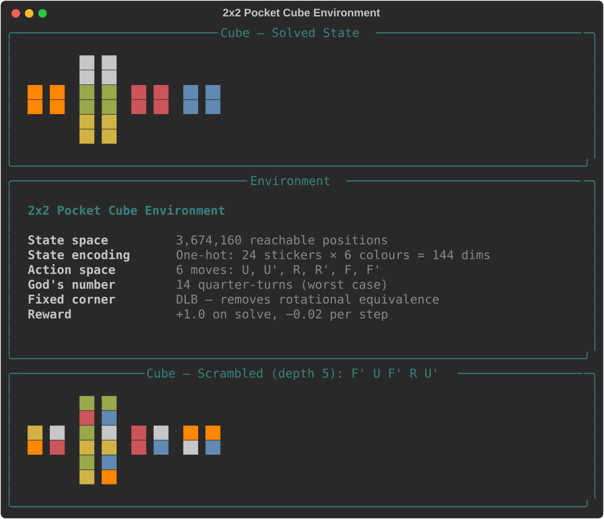
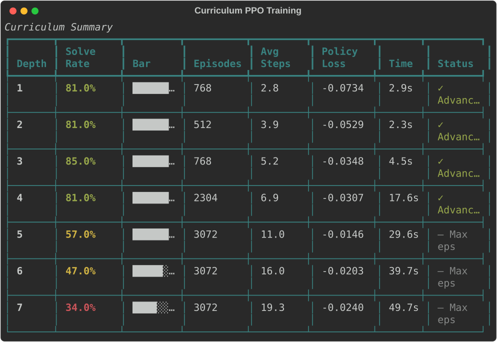
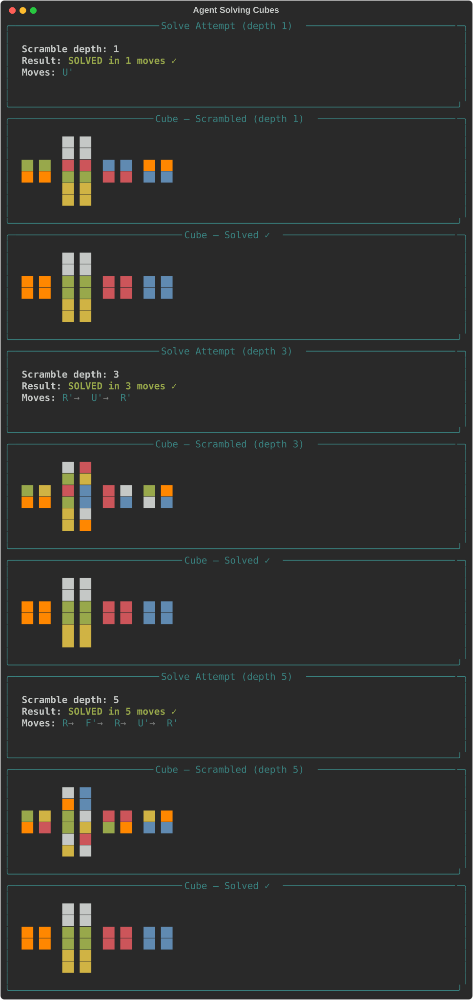
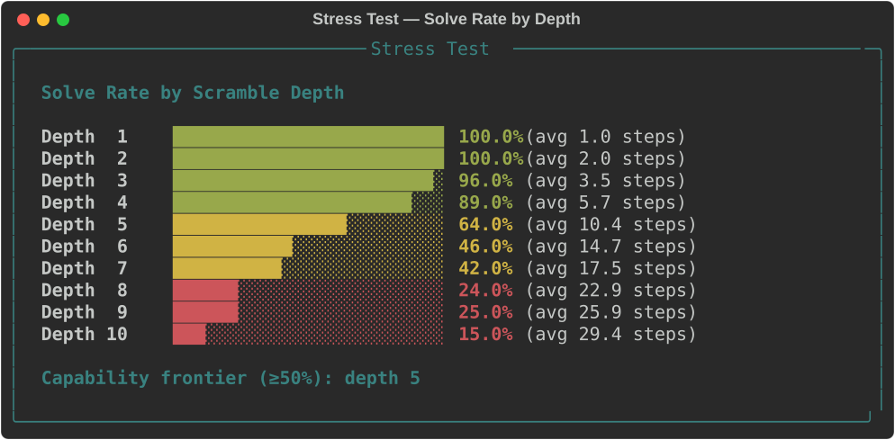
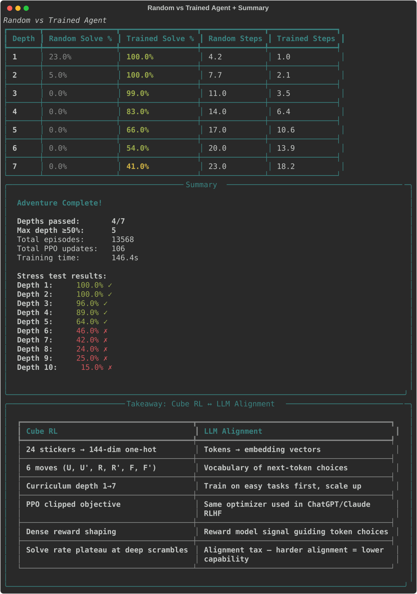

03 — Solve a Rubik's Cube with RL
Train a neural network to solve a 2×2 Pocket Cube from scratch using PPO with curriculum learning. The agent starts at depth-1 scrambles and advances when solve rate exceeds 80%, progressing through depths 1–7. Built with PyTorch + Rich. GPU optional (uses CUDA if available). Trains in ~2.5 minutes.
What Happens
The demo walks you through five phases that train and evaluate an RL agent on the 2×2 Pocket Cube.
Phase 1: Cube World
Explore the cube environment: solved state, moves, scramble/solution demonstrations, and the mapping to LLM alignment. The 2×2 Pocket Cube has 3,674,160 reachable states, 6 quarter-turn moves (U, U′, R, R′, F, F′), and a God’s number of 14.
- State encoding: 24 stickers × 6 colours = 144-dimensional one-hot vector
- Fixed corner: DLB corner is locked to remove rotational equivalence
- Reward: +1.0 on solve, −0.02 per step
Phase 2: PPO Training with Curriculum
The agent trains using PPO with curriculum learning: start at depth-1 scrambles, advance to the next depth when solve rate reaches ≥80%. Training continues through depths 1–7. This is analogous to progressive difficulty in LLM RLHF — easy tasks first, harder ones later.
You’ll see:
- Live training dashboard (solve rate, episode length, loss, entropy)
- Sparkline showing solve rate trend across all episodes
- Curriculum summary table showing advancement through depths
Phase 3: Live Solving
Watch the trained agent solve cubes at depths 1, 3, and 5. For each attempt, see the scrambled state, the sequence of moves, and the solved result.
Phase 4: Stress Test
Test the agent across scramble depths 1–10 with 100 cubes each. A bar chart shows the capability frontier — the deepest depth where solve rate exceeds 50%.
Phase 5: Random vs Trained Agent
Compare the PPO agent against a uniformly random agent across depths 1–7. The comparison demonstrates how dramatically RL improves over random search, and where the agent’s capability falls off.
#1 2x2 Pocket Cube Environment
The solved cube in unfolded cross layout, environment specifications (3.6M states, 144-dim one-hot encoding, 6 moves, God's number 14), and a scrambled cube with its solution. The DLB corner is fixed to eliminate rotational equivalence.

Phase 2: Curriculum PPO Training
The curriculum trainer starts at depth 1 (one random move from solved) and advances when solve rate ≥80%. At each depth, PPO collects rollouts of 128 episodes, computes GAE advantages, and runs clipped surrogate updates. The maximum budget per depth is 3,072 episodes.
Typical results:
- Depths 1–4: Advance quickly (80%+ solve rate within 768–2,304 episodes)
- Depth 5: Reaches ~57% (harder scrambles, more episodes needed)
- Depths 6–7: Plateau at 34–47% — the alignment tax analogy
#2 Curriculum PPO Training
Training summary across all curriculum depths. Depths 1-4 advance with 80%+ solve rate. Deeper scrambles (5-7) hit the episode budget before reaching the threshold, demonstrating diminishing returns — analogous to the alignment tax in LLM RLHF.

Phase 3: Live Solving
The trained agent solves cubes at depths 1, 3, and 5. Each attempt shows:
- The scrambled cube state (unfolded cross)
- The move sequence the agent chose
- Whether it solved successfully, and in how many steps
At depth 1, the agent consistently finds the one-move solution. At depth 5, it often finds solutions in 5–7 moves.
#3 Agent Solving Cubes
Three solve demonstrations at depths 1, 3, and 5. Each shows the scrambled state, the agent's chosen moves, and the solved result. The depth-5 cube is solved in 5 moves — near-optimal given the scramble depth.

Phase 4: Stress Test
100 random cubes are tested at each depth from 1 to 10. The bar chart reveals the capability frontier — typically depth 5 at ≥50% solve rate. Beyond this, performance degrades gracefully.
#4 Stress Test — Solve Rate by Depth
Bar chart showing solve rates from depth 1 (100%) to depth 10 (15%). The capability frontier (≥50% solve rate) is at depth 5. Performance degrades gradually beyond the training curriculum (depths 1-7).

Phase 5: Comparison
Side-by-side comparison of the trained PPO agent vs a uniformly random agent. The random agent can occasionally solve depth-1 (1/6 chance per move), but is effectively useless beyond depth 2. The trained agent maintains meaningful solve rates through depth 6.
#5 Random vs Trained Agent + Summary
Comparison table (random vs trained solve rates and average steps), final summary (depths passed, total episodes, training time), stress test results, and the LLM parallel mapping table connecting cube RL concepts to LLM alignment.

Playing Around
Tuning hyperparameters
Edit the TrainConfig defaults in train.py:
max_depth = 7 # Curriculum goes up to depth 7
advance_threshold = 0.80 # Advance when solve rate ≥ 80%
max_episodes_per_depth = 3000 # Budget per depth
episodes_per_rollout = 128 # PPO batch size
lr = 3e-4 # Learning rate
clip_epsilon = 0.2 # PPO clip range
entropy_coef = 0.01 # Entropy bonus coefficientKey experiments
- Increase max_depth to 10: See how far the agent can learn with more training budget
- Set advance_threshold = 0.95: Require near-perfect mastery before advancing — slower but potentially stronger at deep depths
- Set entropy_coef = 0.1: More exploration — useful if the agent gets stuck at a particular depth
- Set max_episodes_per_depth = 10000: Much larger budget — can the agent eventually master depth 7?
- Remove curriculum (start at depth 7): Train directly on hard scrambles to see why curriculum matters
Modifying the network
Edit policy.py to change the architecture:
- Wider: Increase hidden dims from 256/128 to 512/256 for more capacity
- Deeper: Add a third hidden layer for more representational power
- Residual connections: Add skip connections for better gradient flow
Observing specific phenomena
| Phenomenon | How to trigger | What to look for |
|---|---|---|
| Curriculum benefit | Compare curriculum vs direct depth-7 training | Curriculum reaches higher solve rates faster |
| Diminishing returns | Watch depths 5-7 during training | Solve rate plateaus despite more episodes |
| Exploration collapse | Set entropy_coef = 0.0 | Agent converges to a single action regardless of state |
| Overfitting to depth | Train only at depth 1 (max_depth=1) | Agent solves depth 1 perfectly but fails at depth 2+ |
LLM Parallel Mapping
| Cube RL | LLM Alignment |
|---|---|
| 24 stickers → 144-dim one-hot | Tokens → embedding vectors |
| 6 moves (U, U', R, R', F, F') | Vocabulary of next-token choices |
| One-hot state encoding | Tokenisation + positional encoding |
| Curriculum depth 1→7 | Progressive RLHF: easy → hard preferences |
| PPO clipped objective | Same optimizer used in ChatGPT/Claude RLHF |
| Dense reward shaping | Reward model signal guiding token choices |
| Solve rate plateau at deep scrambles | Alignment tax — harder alignment = lower capability |
| God's number = 14 | Optimal solution length ≈ ideal response quality |
Architecture
Cube Environment (cube.py)
- 2×2 Pocket Cube with 24 stickers (4 per face, 6 faces)
- State: list of 24 colour indices (0–5)
- Moves: U, U′, R, R′, F, F′ (quarter-turns of top, right, front faces)
- DLB corner fixed — removes rotational equivalence
- One-hot encoding: 24 positions × 6 colours = 144 dimensions
- Reward: +1.0 on solve, −0.02 per step
- Scramble generation with configurable depth
Policy Network (policy.py)
- Input: 144-dim one-hot state vector
- Architecture:
Linear(144, 256) → ReLU → Linear(256, 128) → ReLU - Actor head:
Linear(128, 6)→ action logits - Critic head:
Linear(128, 1)→ state value - Orthogonal initialisation for stable training
Curriculum Trainer (train.py)
- Curriculum: depth 1 → max_depth, advance when solve rate ≥ threshold
- PPO with clipped surrogate objective and GAE(λ=0.95)
collect_rollouts(): gather episodes at current depthppo_update(): compute advantages, update policy/value networksevaluate_policy(): test solve rate at specific depths
Visualisation (viz.py)
- All rendering via Rich (no external display needed)
- Unfolded cube cross layout with coloured stickers
- Curriculum summary table, training progress panels
- Solve attempt display, stress test bar charts
- Random vs trained comparison table
Project Structure
03-rubiks-cube-rl/
├── app.py # Main 5-phase terminal demo (355 lines)
├── cube.py # 2x2 Pocket Cube environment (272 lines)
├── policy.py # Actor-critic MLP with PPO helpers (114 lines)
├── train.py # Curriculum trainer + PPO + dataclasses (483 lines)
├── viz.py # Rich terminal rendering (423 lines)
├── requirements.txt # torch, numpy, rich
└── tests/
├── test_cube.py # 89 tests — moves, scramble, tensor, step, DLB
├── test_policy.py # 20 tests — forward pass, action selection, gradients
├── test_train.py # 29 tests — GAE, rollouts, PPO update, curriculum
└── test_viz.py # 24 tests — all Rich renderable components
# ─────────
# 162 tests totalKey Concepts Demonstrated
- PPO clipped surrogate — the same RL optimizer used in ChatGPT, Claude, and other RLHF systems
- Curriculum learning — progressive difficulty, mirroring how LLMs are trained on easy examples before hard ones
- Generalised Advantage Estimation (GAE) — variance reduction for policy gradients
- One-hot state encoding — analogous to tokenisation + positional encoding in transformers
- Capability frontier — the solve rate drop-off at deeper scrambles mirrors the alignment tax
- Actor-critic architecture — shared backbone with policy and value heads, standard in modern RL
- God’s number — the theoretical optimal solution length (14 for 2×2), setting an upper bound on difficulty
Quick Start
# From the repo root
cd coding-adventures/03-rubiks-cube-rl
# Install dependencies (if not using the repo venv)
pip install -r requirements.txt
# Run the demo
python app.pyTraining takes ~2.5 minutes on GPU or ~5 minutes on CPU. Press Enter to advance between phases.
Running Tests
# All 162 tests (~2 seconds)
python -m pytest tests/ -v
# Quick smoke test
python -m pytest tests/ -x -q